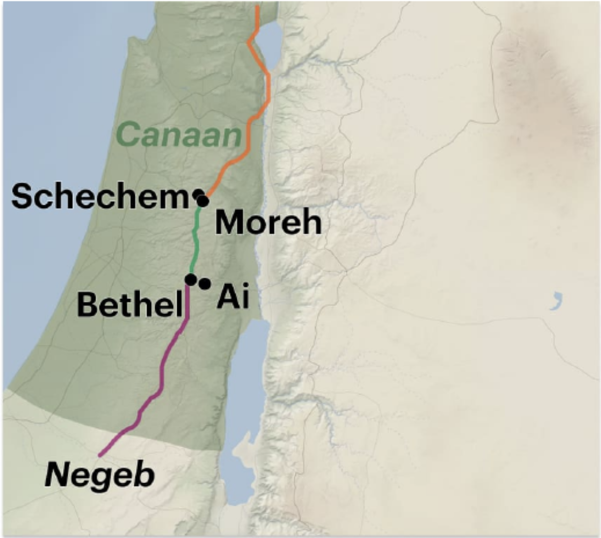
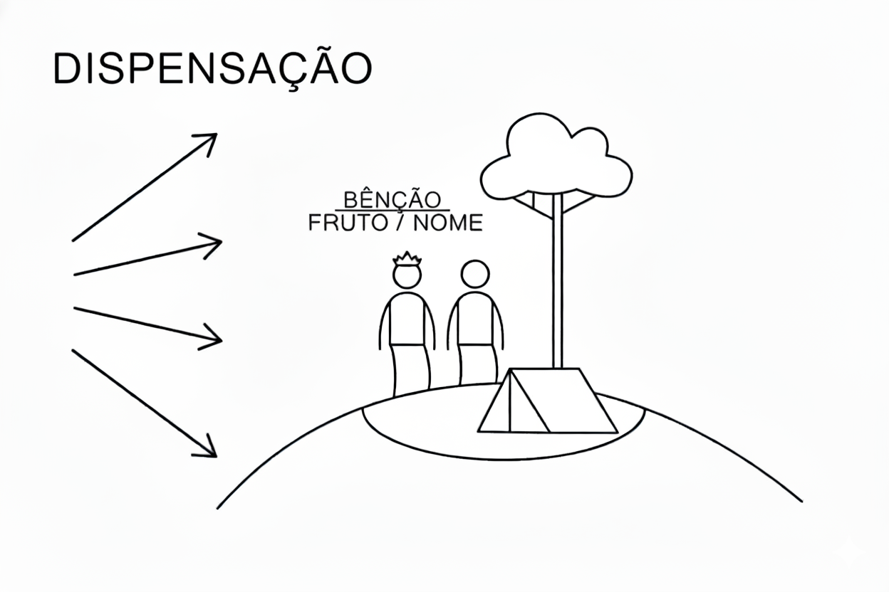

A - A primeira palavra de Yahweh a Avram: Bênção e descendência
B - A resposta de Avram: Viagem para Canaã
A' - A segunda palavra de Yahweh a Avram: Promessa de terra para a descendência
B' - A resposta de Avram: Construir um altar e viajar para o Negueve
Gênesis 12:1-9. Tradução e Design Literário por Tim Mackie para BibleProject Classroom: Abraham (2021).
A sequência narrativa de dois chamados e promessas divinas, cada um seguido pela obediência de Avram, cria um padrão claro para o leitor. Quando o escolhido de Deus segue o comando divino apesar de muitas incógnitas, há uma bênção apenas esperando para ser descoberta.
12:1 E Yahweh disse a Avram,
a. "Saia
b. da sua terra,
b'. e da sua família,
b'. e da casa de seu pai,
a'. para a terra que eu lhe mostrarei.
a. 2 E eu farei de você uma grande nação,
b. e eu o abençoarei,
a'. e farei grande o seu nome;
b'. e assim você será uma bênção.
a. 3 E eu abençoarei
b. aqueles que o abençoarem,
b'. e aquele que o trata como amaldiçoado
a'. eu amaldiçoarei;
a. e em você todas as famílias da terra
b. encontrarão bênção.”
Gênesis 11:27-12:5. Tradução e Design Literário por Tim Mackie para BibleProject Classroom: Noah to Abraham (2020).
A frase hebraica para “vá em frente” (לך לך) em 12:1 é única, e é repetida novamente apenas no clímax dos 10 testes de Avram em 22:2.
Gênesis 12:1 Tradução do Instrutor
vai-te da sua terra... para a terra que eu lhe mostrarei.
Gênesis 22:2 Tradução do Instrutor
vai-te para a terra de Moriá, e ofereça [Yitskhaq] ali como oferta queimada em um dos montes que eu lhe direi.
Avram se separa de sua família e vai para um novo lugar onde Deus criará uma nova família. Esta é uma repetição do padrão do Éden, onde Deus dividiu o único humano em dois humanos para criar a primeira família escolhida. De acordo com Gênesis 2, somente Deus pode fornecer a "ajuda" (עזר) necessária que pode livrar seu escolhido do desamparo.
Gênesis 2:18 Tradução do Instrutor
Não é bom que o homem esteja só. Farei para ele uma fonte de ajuda libertadora (עזר) que lhe corresponda.
Gênesis 2:24 Tradução do Instrutor
Por esta razão, um homem deixará seu pai e sua mãe, e se unirá à sua esposa, e os dois se tornarão uma só carne.
Gênesis 12:1 Tradução do Instrutor
Vá em frente... da sua terra, da sua família de nascimento e da casa de seu pai...
Gênesis 12:7 Tradução do Instrutor
À sua semente (זרע) darei esta terra.
Em ambas as narrativas, a promessa de Deus é fornecer o que os humanos não podem prover por si mesmos. Em Gênesis 2, é a “ajuda libertadora” (‘ezer, עזר) sem a qual o humano não pode florescer no Éden, e em Gênesis 12, é a “semente” (zera‘, זרע) sem a qual a família de Avram não pode se tornar uma bênção para as nações.
Gênesis 12:2 Tradução do Instrutor
E eu farei de você uma grande nação, e o abençoarei,
e farei grande o seu nome; e assim você será uma bênção.
As duas linhas poéticas paralelas contêm duas promessas de grandeza e duas promessas de bênção.
Este primeiro par de linhas destaca o que Deus fará por Avram (torná-lo grande e abençoá-lo), enquanto o segundo item destaca o que Avram se tornará em relação aos outros.
Essas linhas poéticas criam uma vocação para Avram. Ele está sendo convocado para uma nova terra semelhante ao Éden, onde Deus o transformará em uma nova família escolhida, onde ele poderá se tornar um canal de bênção divina para os outros. Essa vocação é o foco das linhas finais do poema.
Gênesis 12:3 Tradução do Instrutor
E eu abençoarei
aqueles que te abençoarem,
e aquele que te trata como amaldiçoado
eu amaldiçoarei;
e em você todas as famílias da terra
encontrarão bênção.”
Aqui, Deus marca Avram como seu escolhido e se compromete a protegê-lo da morte. A promessa vem em duas partes.
A promessa divina de bênção corresponde à bênção divina primeiramente dada à humanidade e depois a Noé após o dilúvio.
Gênesis 1:27-28 Tradução do Instrutor
27Elohim criou a humanidade à sua imagem, à imagem de Elohim ele o criou; macho e fêmea os criou. 28E Elohim os abençoou; e Elohim lhes disse: “Sede fecundos e multiplicai-vos, e enchei a terra, e subjugai-a; e dominai sobre os peixes do mar e sobre as aves do céu e sobre todo ser vivente que se move sobre a terra.”
Gênesis 9:1-2 Tradução do Instrutor
1E Elohim abençoou Noé e seus filhos e disse-lhes: “Sede fecundos e multiplicai-vos, e enchei a terra. 2O temor de vós e o terror de vós estarão sobre todo animal da terra e sobre toda ave do céu; com tudo o que rasteja sobre o solo, e com todos os peixes do mar, em vossas mãos são entregues.”
Gênesis 12:2-3 Tradução do Instrutor
2e eu farei de você uma grande nação, e eu o abençoarei, e farei grande o seu nome; e assim você será uma bênção; 3e eu abençoarei os que te abençoarem, e aquele que te amaldiçoar eu amaldiçoarei; e em ti todas as famílias-clãs da terra encontrarão bênção.
O poema de bênção em 12:2-3 tem cinco bênçãos que correspondem curiosamente às cinco maldições em Gênesis 3-11, e tem sete linhas poéticas que correspondem às bênçãos posteriores dadas aos patriarcas, que também consistem em sete partes.
Toda a Bíblia pode ser vista como uma longa resposta a uma pergunta muito simples: O que Deus pode fazer a respeito do pecado e da rebelião da raça humana? Gênesis 12 a Apocalipse 22 constituem a resposta de Deus ao problema apresentado pelas narrativas sombrias de Gênesis 3–11. Em outras palavras, Gênesis 3–11 expõe o problema que a missão de Deus passa a enfrentar a partir de Gênesis 12. Gênesis 1–11 apresenta um problema de proporções cósmicas, ao qual Deus precisa dar uma resposta igualmente cósmica. Os problemas descritos de forma tão vívida em Gênesis 1–11 não serão resolvidos apenas encontrando um modo de levar os seres humanos ao céu quando morrem. O amor e o poder do Criador precisam lidar não só com o pecado individual, mas também com a discórdia e a hostilidade entre as nações; não apenas com as necessidades humanas, mas também com o sofrimento dos animais e a maldição sobre a terra. O chamado de Abrão marca o início da resposta de Deus ao mal dos corações humanos, à rivalidade entre as nações e à dor da criação inteira.”
Wright, Christopher (2006). The Mission of God: Unlocking the Bible's Grand Narrative. IVP Academic. 195.
A jornada de Avram para Canaã é, na verdade, a conclusão do que seu pai Terá deixou por fazer em 11:31. As ações de Avram são claramente contrastadas com as de seu pai.
Gênesis 11:31 NVI
Terá tomou seu filho Abrão, seu neto Ló, filho de Harã, e sua nora Sarai, mulher de seu filho Abrão, e juntos partiram de Ur dos caldeus para ir para Canaã. Mas, ao chegarem em Harã, ali se estabeleceram.
Gênesis 12:5 NVI
Abrão levou sua mulher Sarai, seu sobrinho Ló, todos os bens que haviam acumulado e as pessoas que haviam adquirido em Harã, e partiram para a terra de Canaã; e chegaram à terra de Canaã.
a 6 E Avram atravessou (ויעבר) a terra
b até o lugar de Siquém
b' até o carvalho de Moré,
a' e os cananitas estava então na terra.
a 7 E Yahweh apareceu a Avram e ele disse,
b "À tua semente darei esta terra."
a' E ele construiu ali um altar a Yahweh que lhe apareceu.
a 8 E ele seguiu em frente (ויעתק) de lá
b para a colina a leste de Betel,
a' e armou sua tenda,
b' Betel a oeste
b'' e Ai a leste;
a e ele construiu ali um altar a Yahweh
a' e invocou o nome de Yahweh.
a E Abraão partiu (וַיִּסַּע),
a' continuando a sua jornada (נָסוֹעַ) em direção ao Neguebe.
Gênesis 12:6-9. Tradução e Design Literário por Tim Mackie para BibleProject Classroom: Noah to Abraham (2020).

Openstreetmap.org.
Avram entra em Canaã pelo norte e passa pela região montanhosa que corre de norte a sul, com os vales costeiros e do rio Jordão em cada lado. Ele faz várias paradas muito interessantes ao longo do caminho.
Avram é retratado fazendo três paradas, as duas primeiras perto de cidades no topo das colinas, centrais para a rede de estradas em Canaã. A narrativa destaca como ele não entra nas cidades povoadas pelos cananeus. Em vez disso, Avram acampa perto das cidades e constrói novos lugares de adoração para o Elohim que o chamou para esta terra.
Desta forma, Avram é retratado em linhas paralelas a Abel e Sete, em contraste com Caim e Lameque.
| Filhos de Adão em Gênesis 4 | "Filhos" de Noé em Gênesis 12 |
|---|---|
| Gn. 4:2-4 Abel era um “pastor de ovelhas” e fazia ofertas a Yahweh de seu rebanho. | Gn. 12:5, 16 Avram (da linhagem de Sem) lidera uma caravana de pastores migrantes com muitos rebanhos. |
| Gn. 4:26 Sete, a semente dada no lugar de Abel, tem seu primeiro filho, chamado Enos (= “humano”), quando “se começou a invocar o nome de Yahweh”. | Gn. 12:6, 8 Avram constrói altares em Canaã e “invoca o nome de Yahweh”. |
| Caim era um lavrador (Gn. 4:1-4), que, após assassinar Abel, o pastor, passou a construir a primeira cidade na Bíblia e a nomeou em homenagem a seu primeiro filho, Enoque (= “dedicado”, Gn. 4:17). | Gn. 12:6 Os cananeus (da linhagem de Cam), em contraste com Avram, vivem nas cidades. |
Filhos de Adão e Filhos de Noé. Criado por Tim Mackie para BibleProject Classroom: Abraham (2021).
Abrão torna-se a nova humanidade, descendente da linhagem dos que adoram Yahweh, escolhidos e separados de seus parentes urbanos que adoram coisas feitas por mãos humanas — deuses ou cidades. Abrão será aquele que restabelecerá a adoração ao Deus Criador, e ele começa fazendo isso ao marcar a região montanhosa central como território de Yahweh.
A jornada de três paradas de Avram pela terra prometida inicia um padrão que é posteriormente espelhado por seu neto Jacó em Gênesis 33-35, e mais uma vez por Josué e os israelitas (Josué 7-8).
| Avram | Jacó | Josué (Após a Parada #1: Jericó) |
|---|---|---|
|
Parada
#1: Siquém Gênesis 12:6-7 E Avram passou pela terra até o lugar de Siquém, até o Terebinto de Moré... E construiu ali um altar a Yahweh que lhe aparecera. |
Parada
#1: Siquém Gênesis 33:18, 20 E Jacó chegou a salvo à cidade de Siquém, que está na terra de Canaã, quando voltou de Padã-Arã, e acampou diante da cidade... E erigiu ali um altar, e chamou-lhe "El, o Deus de Israel". |
Parada
#3: Siquém Josué 8:30 Então Josué edificou um altar ao Senhor, o Deus de Israel, no monte Ebal [que fica fora de Siquém, veja Deut. 11:29-30]. |
|
Parada
#2: Betel Gênesis 12:8 E partiu dali para a montanha a leste de Betel (מקדם לבית אל), e armou a sua tenda, tendo Betel ao ocidente e Ai ao oriente (מקדם). E construiu ali um altar a Yahweh e invocou o nome de Yahweh. |
Parada
#2: Betel Gênesis 35:1 E Deus disse a Jacó: "Levanta-te, sobe a Betel e habita ali; e faze ali um altar a El que te apareceu quando fugiste de teu irmão Esaú." Gênesis 35:6-7 Assim chegou Jacó a Luz (que é Betel), que está na terra de Canaã... E ele construiu um altar ali, e chamou o lugar El-Betel. |
Parada
#2: Betel Josué 7:2 Josué enviou homens de Jericó a Ai, que está junto a Bete-Áven, a leste de Betel (מקדם לבית אל), e disse-lhes: "Subi e espiai a terra." E os homens subiram e espiaram a Ai. Josué 8:9 Josué os enviou, e eles foram para a emboscada e ficaram entre Betel e Ai (בין בית אל ובין העי), a oeste de Ai (מים לעי); porém Josué passou aquela noite no meio do povo. |
|
Parada
#3: O Negueve Gênesis 12:9 E Avram partiu (ויסע), continuando e viajando para o Negueve. |
Parada
#3: O Negueve Gênesis 35:27 Jacó veio a seu pai Isaque em Manre, perto de Quiriate-Arba (isto é, Hebrom), onde Abraão e Isaque haviam habitado. Gênesis 46:1 E Israel partiu (ויסע) com tudo o que tinha, e veio a Berseba, e ofereceu sacrifícios ao Deus de seu pai Isaque. |
Parada
#4: O Negueve Josué 10:40 Assim Josué feriu toda a terra, a região montanhosa e o Negueve e as planícies e as encostas e todos os seus reis. Josué 11:16 Assim Josué tomou toda aquela terra: a região montanhosa e todo o Negueve, e toda a terra de Gósen, e as planícies, e a Arabá, e a região montanhosa de Israel e suas planícies. |
Padrão da Jornada de Avram. Criado por Tim Mackie para BibleProject Classroom: Abraham (2021).
Note que no centro de Gênesis 12:6-9 está a promessa de terra para a família de Avram.
a 7 E Yahweh apareceu a Avram e ele disse,
b "À tua semente darei esta terra."
a' E ele construiu ali um altar a Yahweh que lhe apareceu.
A promessa de Deus em 12:1-3 focava na família que Deus construiria a partir da linhagem de Avram e Sarai, e Avram foi simplesmente instruído a "ir para a terra que eu lhe mostrarei". Agora que Avram chegou a essa terra, a próxima parte da promessa de Deus é revelada: a própria terra se tornará parte da herança de Avram. Essa apresentação em duas etapas da promessa de Deus cria uma analogia importante entre os dois elementos da promessa de Deus.
Abrão viaja para a terra, levanta altares a Yahweh
Abrão constrói um altar e viaja para o Negueve
Gênesis 12:1-9. Tradução e Design Literário por Tim Mackie para BibleProject Classroom: Abraham (2021).
Gênesis 12:1-8. Tradução e Design Literário por Tim Mackie para BibleProject Classroom: Abraham (2021).
Essa analogia entre a promessa de semente e terra é fundamental para o resto da história de Avraham. Esses dois elementos da promessa de Deus tornam-se intimamente entrelaçados, cada um envolvendo o outro, de modo que se tornam inseparáveis. A promessa de uma linhagem familiar requer um lugar para essa família viver, e a promessa de uma terra para habitar pressupõe a existência de uma família que a cultivará. Dessa forma, a promessa se assemelha à bênção divina dada a Adão e Eva, o que certamente é o motivo pelo qual o narrador destaca o fato de que Avram faz seus altares em lugares altos, perto de árvores.
a 6 E Avram atravessou (ויעבר) a terra
b até o lugar de Siquém
b' até o carvalho de Moré,
a' e os cananitas estava então na terra.
a 7 E Yahweh apareceu a Avram e ele disse,
b "À tua semente darei esta terra."
a' E ele construiu ali um altar a Yahweh que lhe apareceu.
Todas essas palavras são construídas a partir da raiz hebraica ra'ah (ראה) "ver". É uma alusão não tão sutil às árvores do Éden, onde os humanos "viram" e tiveram "seus olhos abertos" após um grande fracasso em confiar na sabedoria de Yahweh. Aqui, Avram tem seus olhos abertos para ver Yahweh após seu primeiro ato de confiança na convocação de Yahweh para deixar sua família e vir para Canaã.

A Partir da Dispersão. Ilustração criada por Tim Mackie para BibleProject Classroom: Abraham (2021).
Contraste a promessa de Deus de tornar grande o nome de Avram com o desejo dos arquitetos da torre de Babel de fazer um grande nome para si mesmos. O que isso nos mostra sobre o caráter de Deus e o que Deus deseja ver nos seres humanos?